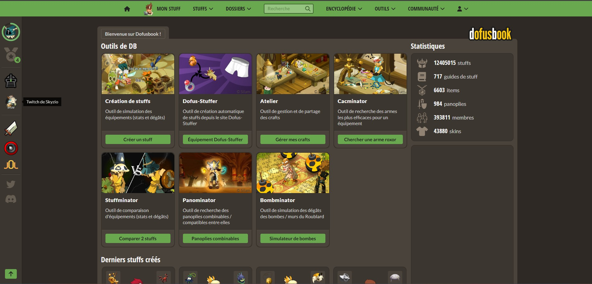
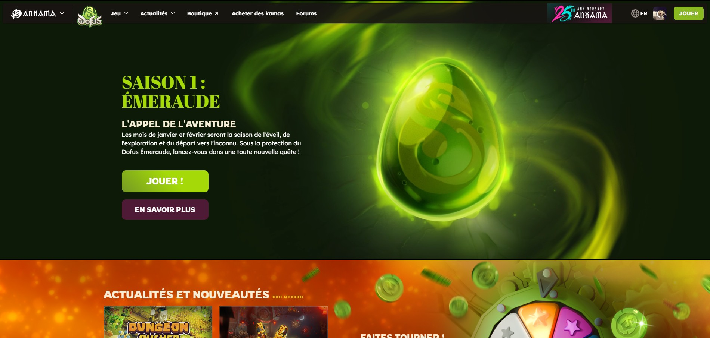
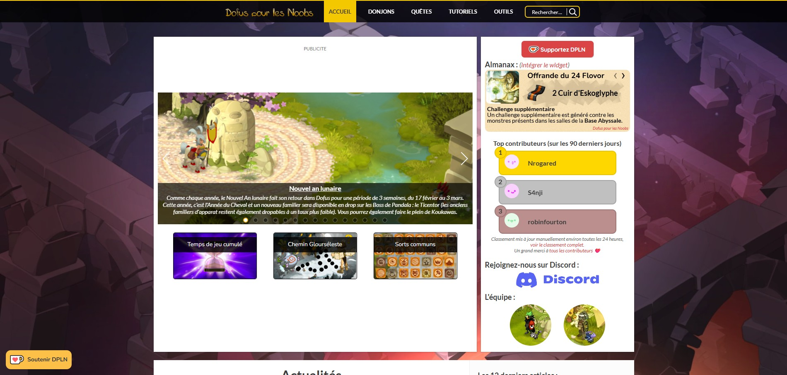
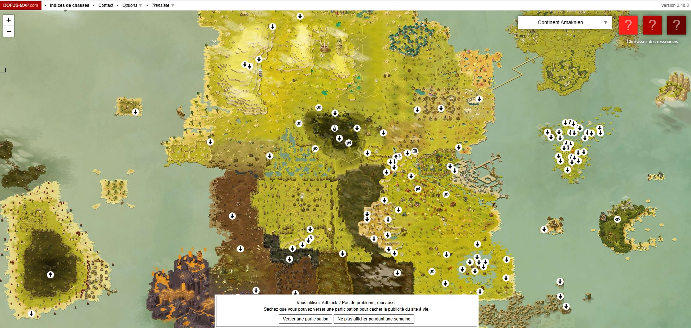
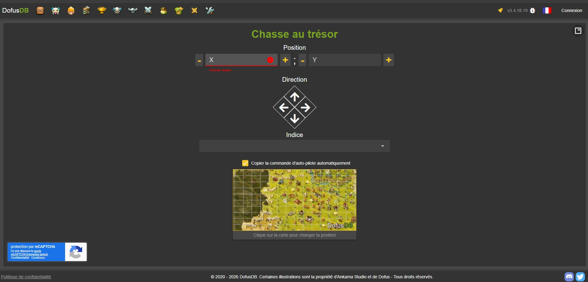
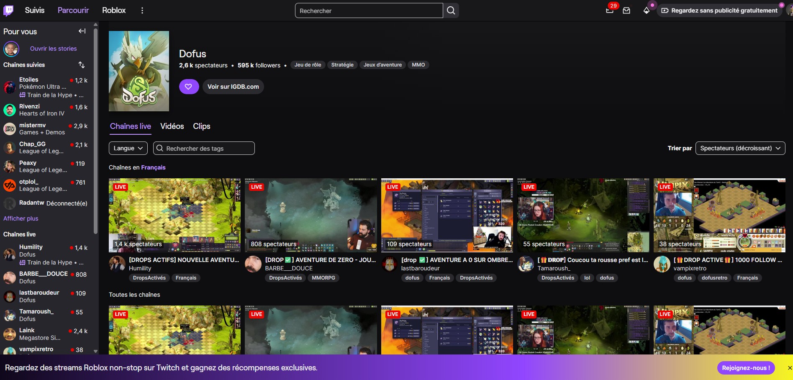
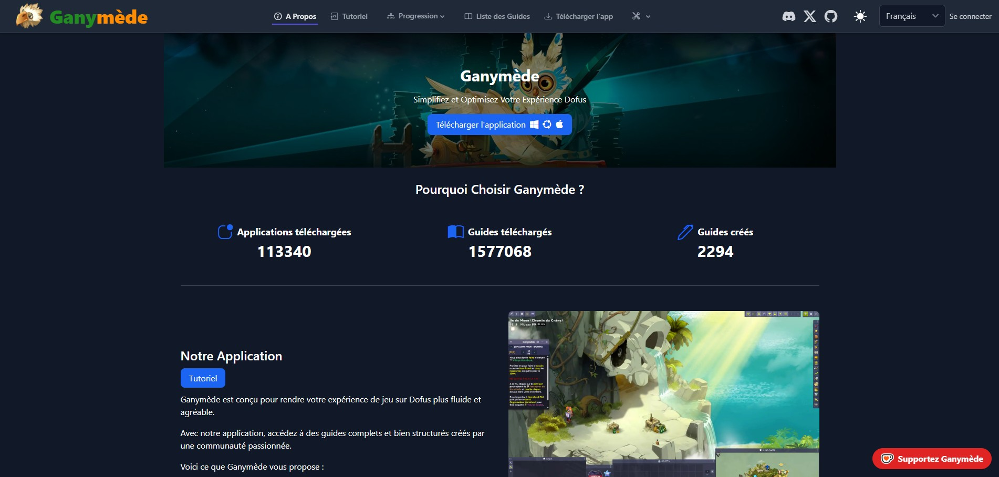
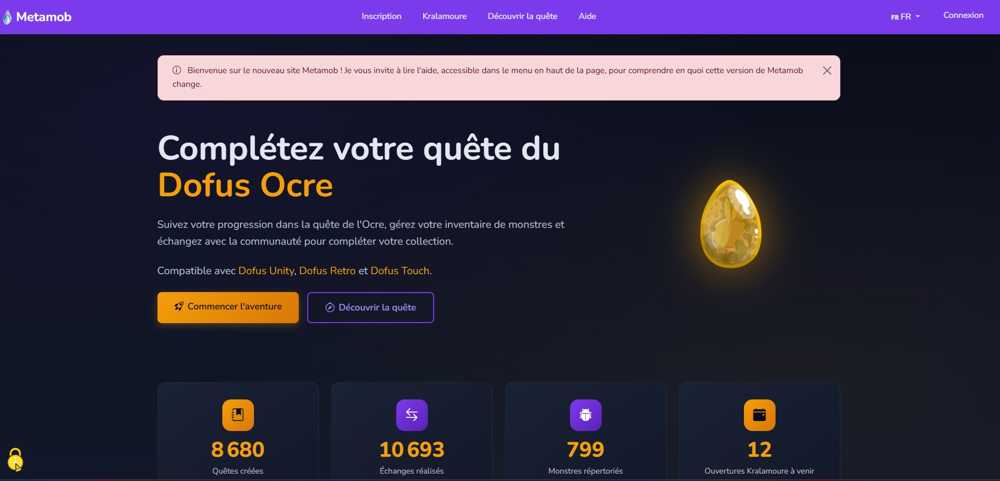

Liens Utiles
Les outils et sites indispensables pour Dofus

DofusBook
Création de builds, stuffs et simulateur de panoplies

Dofus.com
Site officiel du jeu, actualités et mises à jour

Dofus Pour Les Noobs
Guides complets, quêtes, donjons et tutoriels

Dofus Map
Carte interactive du monde des Douze

DofusDB - Chasses au trésor
Solveur de chasses au trésor et base de données

Twitch - Dofus
Streams en direct de la communauté Dofus

Ganymede
Application companion pour optimiser son gameplay

Metamob
Gestion et suivi de vos monstres à capturer
Accès mules — Quêtes débloquantes
Liste des ressources nécessaires pour débloquer l'accès aux principales zones avec une mule (utile pour multiplier les percepteurs).
Île d'Otomaï · Étape 1
Le Nouveau Monde
Ressources
- ×2 Miséricorde du Chafer d'Élite
- ×1 Gros Boulet
- ×1 Oreille de Foufayteur
- ×1 Huile de Sésame
Récompenses :
95 458 XP · 1 905 K
Île d'Otomaï · Étape 2
L'Île des Naufragés
Ressources
- ×1 Tronc de Kokoko
- ×1 Tranche de Nodkoko
- ×1 Kokopaille
- ×1 Coffret maudit du Flib
- ×3 Combats (en groupe possible)
Récompenses :
95 458 XP · 1 905 K
Île des Wabbits
Intrusion chez les Wabbits
Ressources
- ×1 Ailes de Scarafeuille Bleu
- ×1 Ailes de Scarafeuille Blanc
- ×1 Ailes de Scarafeuille Vert
- ×1 Ailes de Scarafeuille Rouge
Récompenses :
127 134 XP · 2 380 K
Île de Moon
Partir un jour sans retour
Ressources
- ×1 Casque
- ×1 Ailes en bois
Récompenses :
101 882 XP · 1 740 K · 2× Noix de Kokoko
Forêt Maléfique
Un pendule pour guider ses pas
Ressources
- ×1 Chaînes Brisées
- ×1 Ebonite
- ×1 Scalp de Bwork Archer
Épaves Silencieuses + Marches Magmatiques
La Colère des Dieux
À prévoir
- Pas de ressources — quête à étapes (parler aux NPCs, parcourir le temple, La Voix des Douze, Prêtresse de Féca)
Récompenses :
1 312 500 XP · 1× Égide de Féca
Crokusko
Perdu dans le temps
À prévoir
- Pas de ressources — 2 combats à prévoir (en groupe possible)
Récompenses :
2 625 000 XP · 43 980 K · 2× Œil de Crocodaille albinos
Sorts communs — Priorités
Sorts communs à récupérer en priorité pour optimiser un personnage. Guide complet sur Dofus Pour Les Noobs →